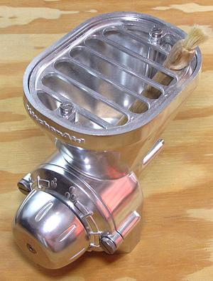

Grain Mill

This device is not needed in most kitchens, but is essential to some
"natural foods" enthusiasts, and to culinary explorers. There
are many grain mills on the market to serve various needs. I chose the
one in the photo because I have a powerful KitchenAid stand mixer to
drive it. There are stand-alone electric mills and hand cranked mills
of varying quality and capacity.
The unit in the photo is quite satisfactory. My 40 year old
KitchenAid grain grinder was not - it didn't grind fine enough. While
you can't expect a home mill to grind as fine as commercial flour
(that is made using powerful roller mills), you do need reasonably fine.
Some Coffee Grinders can grind fine enough for very small batches.
Caution: For a unit like the one pictured, before you
use it, turn it to the finest setting and see if you can turn the stem
by hand. If not, back it off a notch or you may damage your mixer.
Also, take it apart and clean the burrs with cleanser, as they are
probably coated with oil, and grinding grain uncleaned will jam it all
up.
More on Kitchen Equipment.
Buying
Do an on-line search for Grain Mills and you'll
see many choices at many prices. Carefully consider your actual needs,
trying to keep them separate from your fantasies.
Using:
Thee mills are for grains, and other non-oily
seeds. Do not try to grind oily things like sunflower seeds, coffee
beans, etc. You will just clog up your machine.
Maintaining:
Keep it clean. Take it apart to clean,
and dry it well before re-assembling. The burrs are generally bare
iron, and they will rust if not completely dry.
ke_grnmillz 190318 - www.clovegarden.com
©Andrew Grygus - agryg@clovegarden.com
Photos
on this page not otherwise credited © cg1
- Linking to and non-commercial use of this page permitted